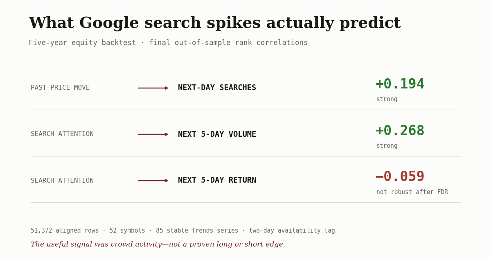
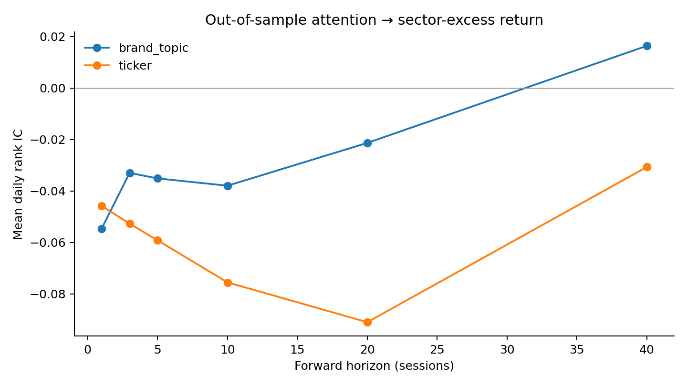
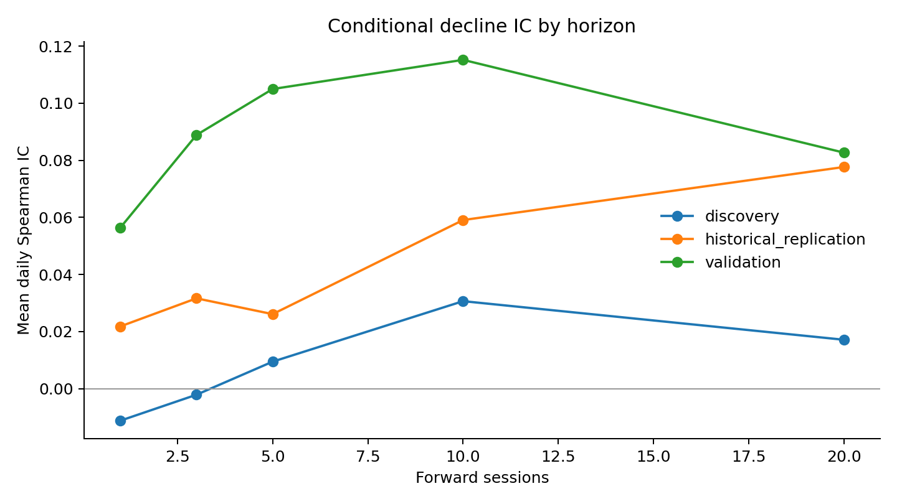

I Backtested Five Years of Google Searches Against Stocks. The Signal Wasn't Alpha.

There is a wonderfully simple trading idea hiding inside Google Trends: when everyone suddenly searches for a stock, buy it. Or short it. Honestly, traders will accept either answer as long as the chart goes up and to the right.
I wanted to know which story the data actually supported. So I built a five-year backtest across the hottest liquid stocks in each quarter, pulled Google search histories for both ticker symbols and company topics, delayed every signal so the model could not see tomorrow's data, and gave the final untouched period one job: grade the idea.
Google search spikes are mostly a reaction to stocks that already moved. They reliably predict more trading activity. Falling attention predicts activity cooling off. Neither direction reliably predicts price direction.
- Past price move → next-day ticker searches: +0.194 rank correlation, statistically strong.
- Ticker searches → next five-day volume: +0.268, the strongest result in the original study.
- Ticker searches → next five-day return: −0.059. Interesting, mildly contrarian, but it failed the pre-registered multiple-testing gate.
- Falling ticker attention → next five-day return: +0.032 after a recent attention high—the opposite of a sell-off signal.
- Falling ticker attention → next five-day volume: −0.255, a strong and stable contraction in participation.
Translation: Google Trends can tell me whether the crowd is arriving or leaving. It still cannot tell me which way price goes next.

The question was backwards
The obvious question is: do searches predict stock moves? But that assumes attention arrives first. Anyone who has watched a meme stock knows the opposite story is at least as plausible: the stock rips, screenshots spread, and then everyone Googles the ticker to figure out what they just missed.
So I tested both directions:
- Does abnormal search attention predict future returns, volume, or volatility?
- Do prior price moves predict future search attention?
That second question mattered more than it looked. If price reliably moves before searches rise, the supposed leading indicator is actually a rear-view mirror.
The honest backtest kept trying to lie
The frozen window ran from July 25, 2021 through July 24, 2026. Every quarter, I ranked stocks by their trailing 126-session median dollar volume and kept the top 25. That produced 21 quarterly formations and 58 unique names. Raw prices ranked liquidity; adjusted prices measured returns. ETFs were excluded. Alphabet's two share classes could not both occupy a slot.
For each stock I pulled two independent Google Trends series: the ticker, where the ticker was not hopelessly ambiguous, and the company's Google topic. Each daily value was normalized against its own recent history. Then I imposed a two-calendar-day availability lag and traded, conceptually, at the next session's open. No same-day psychic data.
The outcome was the stock's next five-day return minus its sector ETF's return. Every day, stocks were ranked against the other stocks active that quarter. The research used train, validation, and final test periods, with a 40-session embargo before the test. Confidence intervals used block bootstrapping. Significance tests used Newey–West errors and false-discovery-rate correction.
That sounds fussy because it had to be. The pipeline caught three versions of a prettier, wrong answer:
- The first universe accidentally admitted QQQ, TQQQ, and SQQQ. Their names did not contain “ETF,” so a lazy filter treated them like companies. Rebuilt.
- The first liquidity ranking used adjusted prices. Historical ranking should use the raw price and raw volume available then. Rebuilt again.
- The first stability test passed 109 of 109 windows. Suspiciously perfect. SerpApi had cached the responses. I forced 109 fresh no-cache pulls; five failed the stability threshold and their entire term series were excluded.
Every time the backtest got less impressive, it got more useful.
The final panel contained 51,372 aligned rows across 52 stocks and 85 stable search series. Eleven pipeline tests passed. Fifteen independent verification gates passed. The primary result was recomputed from the saved panel and matched.
Search is late
The cleanest result was the reverse-direction test. Large prior stock moves predicted higher next-day search attention:
- Brand-topic searches: +0.110 rank correlation.
- Ticker searches: +0.194.
Both survived the full multiple-testing correction with effectively zero adjusted p-values. In plain English: when a stock makes an unusually large move, people search for it the next day. The ticker itself reacts more sharply than the general company topic, which is exactly what you would expect from traders chasing a moving symbol.
Search attention also predicted what came next—just not direction. High-attention names saw much heavier trading volume over the following five sessions:
- Brand-topic attention → volume: +0.194.
- Ticker attention → volume: +0.268.
Brand-topic attention also predicted higher realized volatility (+0.082). Ticker attention did not reliably predict volatility after correction. The broad picture is still obvious: searches are an activity signal. Something happened, people noticed, and the name stayed busy.
Is it a counter-signal? Almost. Not enough.
This is where the result gets tempting.
High ticker-search attention had a −0.059 relationship with next-five-day sector-relative returns in the final test. The highest-attention quintile underperformed the lowest-attention quintile by 0.57% over five sessions.
That sounds tradeable. It was not.
The confidence interval for the ticker correlation stayed below zero, and the ordinary p-value was 0.047. But I tested multiple outcomes, horizons, and term types. After the pre-registered false-discovery correction, the adjusted q-value was 0.115—above the 0.10 gate. The quintile-spread confidence interval also touched zero. Brand-topic attention was weaker still: −0.035 with an adjusted q-value of 0.199.
So the fair sentence is not “Google Trends is a short signal.” It is:
Abnormally high ticker searching is an overheating warning. The crowd may be late, but this test does not prove that fading the crowd makes money.
The negative return relationship is worth monitoring in new data. It is not strong enough to promote into a strategy. Because the leading-alpha gate failed, the portfolio simulator did not run. Zero portfolios greenlit is a result, not an omission.

What if attention falls instead?
The original result raised the obvious follow-up: maybe a search spike does not cause the sell-off, but the crowd leaving does. So I froze a second test around an attention unwind: among stocks that had recently reached unusually high search attention, did a steeper decline in searches predict worse sector-relative returns over the next five sessions?
The extension reused the same frozen 51,372-row panel and made zero new Google Trends pulls. A qualifying stock had to exceed its trailing 80th percentile of attention during the prior 14 days. The decline signal compared the most recent seven calendar days with the preceding 21, kept the original two-day data lag, and left 1,011 eligible market dates. Because the old final period had already been inspected, this was historical evidence only—not a fresh untouched validation set.
The sell-off thesis failed. The pooled five-day rank correlation was +0.032, not negative. Discovery, validation, and historical replication were all positive: +0.009, +0.105, and +0.026. The steepest-decline quintile outperformed the shallowest-decline quintile by 0.40% over five sessions.
I am not flipping that into a new “falling searches are bullish” strategy. The controlled Fama–MacBeth interaction was effectively noise (p=0.820). The event study showed +0.17% after five sessions, with p=0.482 and a 95% interval from −0.25% to +0.72%. A 60-session placebo was also significant, which is another reason to refuse the prettier story.
Rising attention predicts more participation. Falling attention predicts less participation. Neither reliably predicts price direction.
The participation result was much cleaner. Declining ticker attention had a −0.255 relationship with next-five-day trading volume, and it stayed negative across discovery (−0.265), validation (−0.190), and replication (−0.293). Twenty-two tests and 82 independent verification checks passed; network calls stayed at zero; the original study artifacts remained unchanged. The return gate still failed, so no portfolio or prospective collector was armed.

The useful signal is “don't chase”
If I were putting this into an actual trading system, I would not let Google Trends choose longs or shorts. I would use it as a context flag:
- Position sizing: a search spike means the name is crowded and likely to trade heavily. Expect noisier execution and wider outcome dispersion.
- Entry discipline: if the chart already ripped and searches just exploded, do not confuse public discovery with early information.
- Risk monitoring: rising brand attention can warn that volatility and volume are about to stay elevated.
- Research triage: search spikes are good at telling an agent which names deserve immediate context gathering. They are bad at telling it which side to take.
The larger lesson is about alternative data. A dataset can be predictive and still have no directional edge. Search attention strongly predicted activity. If I had only tested returns, I would have called the experiment a failure. If I had stopped at the uncorrected negative return result, I would have called it alpha. Both conclusions would have been lazy.
Google Trends did contain a signal. It told me where the crowd had arrived and when participation was draining away. Rising attention meant volume would persist. Falling attention meant volume would contract.
It still did not tell me what to buy or short.
Method note: Google Trends was accessed through SerpApi because Google's official API was not generally available. The full run required roughly 1,300 normalized Trends pulls plus 109 fresh stability re-pulls. The equity universe is reconstructed inside Alpaca's current active-and-inactive exchange-listed coverage; it is not a delisting-complete historical U.S. security master. Results should not be generalized to the entire market without that caveat.
Disclosure: this is research, not investment advice. I hold and trade some securities that appeared in the study. No portfolio was deployed from this signal.
Newsletter
Get the next post by email.
One email when I publish something new. No spam, no fixed schedule, unsubscribe anytime.